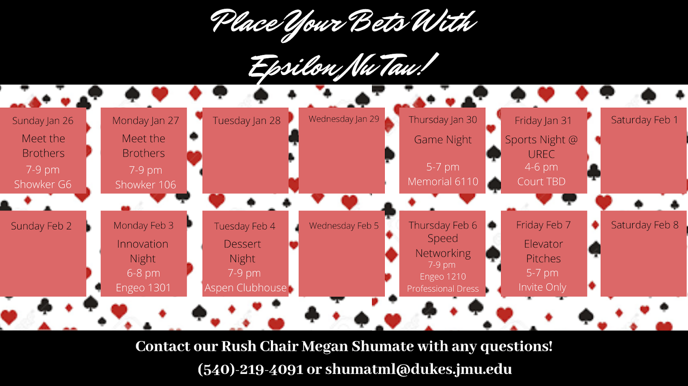

Spring 2020 Recruitment
Rush Video
Frequently Asked Questions
-
ENT is open to all majors!
-
Yes! Contact the rush chair Megan if you are unable to make any of the meet the brother events.
-
Yes! This semester we plan to have multiple events with a panel of speakers or multiple speakers. We are also collaborating with other business organizations to get a panel of JMU alumni to speaker at an event.
-
We host a variety of events that range from professional events such as a panel of speakers, workshops to better your professionalism, service events, and social events such as a bonfire and formals.
-
In order to be invited to elevator pitches, you must attend at least two events and attend speed networking.